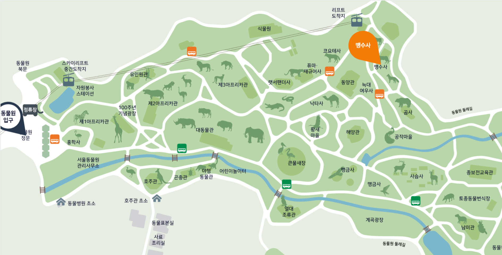

동물 상세정보
서울대공원의 동물가족을 자세히 소개합니다.

시베리아호랑이
(영명) Siberian Tiger
(학명) Panthera tigris altaica
멸종위기동물(등급) CITES Ⅰ
호랑이 아종 중 몸집이 가장 크다.
추운 곳에서 생활하기 때문에 열손실을 줄이기 위해 몸집이 크고 영역도 가장 넓다.
현재는 중국과 러시아 일부 지역에 350여 마리의 야생 개체가 살고 있다.
종분류
척추동물문 > 포유류강 > 식육목 > 고양이과
분포
러시아 아무르지역, 중국 동북부, 북한
사는 곳
험한 산악의 산림
먹는 것
육식성(멧돼지, 사슴, 산양)
임신
약 100일(2~6마리 출산)
수명
약 15년
동물사 위치
맹수사
동물사 안내도
